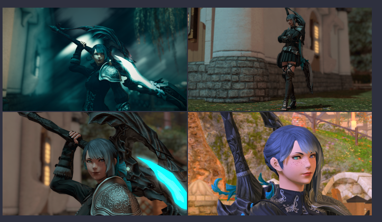

Snippets and tools
I, as working on my blog, created some cool snippets or useful tools.
CSS snippets¶
Grid CSS snippets¶
Automatically convert the grid callout layout (from ITS) to mkdocs

Add this to any css from your documentation:
:root {
--md-admonition-icon--grid: url('data:image/svg+xml;charset=utf-8,<svg xmlns="http://www.w3.org/2000/svg" viewBox="0 0 640 512"><path d="M352 432c0 8.836-7.164 16-16 16H176c-8.838 0-16-7.164-16-16V128H48c-26.51 0-48 21.5-48 48v288c0 26.51 21.49 48 48 48h416c26.51 0 48-21.49 48-48v-80H352v48zm-248 7c0 4.969-4.031 9-9 9H65c-4.969 0-9-4.031-9-9v-30c0-4.969 4.031-9 9-9h30c4.969 0 9 4.031 9 9v30zm0-104c0 4.969-4.031 9-9 9H65c-4.969 0-9-4.031-9-9v-30c0-4.969 4.031-9 9-9h30c4.969 0 9 4.031 9 9v30zm0-104c0 4.969-4.031 9-9 9H65c-4.969 0-9-4.031-9-9v-30c0-5 4.03-9 9-9h30c4.969 0 9 4.031 9 9v30zm304 178c0-4.969 4.031-9 9-9h30c4.969 0 9 4.031 9 9v30c0 4.969-4.031 9-9 9h-30c-4.969 0-9-4.031-9-9v-30zM591.1 0h-352c-25.6 0-48 21.49-48 48v256c0 26.51 21.49 48 48 48h352c26.51 0 48-21.49 48-48V48c.9-26.51-20.6-48-48-48zm-288 64c17.68 0 32 14.33 32 32s-14.32 32-32 32c-16.8 0-32-14.3-32-32s15.2-32 32-32zm271 215.6c-2.8 5.2-8.2 8.4-14.1 8.4H271.1c-6 0-10.6-3.4-13.4-8.7-2.7-5.4-2.2-11.9 1.4-16.7l70-96c3-4.2 7.8-6.6 12-6.6 5.11 0 9.914 2.441 12.93 6.574l22.35 30.66 62.74-94.11C442.1 98.67 447.1 96 453.3 96c5.348 0 10.34 2.672 13.31 7.125l106.7 160c3.29 4.875 3.59 11.175.79 16.475z"/></svg>');
}
.md-typeset .admonition.grid {
box-shadow: none;
}
.md-typeset .admonition.grid p:not(.admonition-title) {
display: flex;
margin-block-start: 0;
margin-block-end: 0;
justify-content: center;
}
.md-typeset .admonition.grid img {
display: table-cell;
vertical-align: middle;
padding: 1px;
width: 75%;
height: 75%;
}
Add a image banner to mkdocs¶

You can add a cool image banner with editing utils.css and adding :
Don’t forget to edit the
image_link with the real links ! Personnaly, I use a unsplash image.
Plugins¶
Note
Don’t forget to add the plugin in your requirements.txt
Custom fences¶
Bundled with the template
Some Obsidian’s plugin use codeblocks to do some things, as Agtable or Table extended
To automatically convert these block to markdown, I use a mini plugin I wrote : Mkdocs Custom Fence
To use it :
- Add
mkdocs_custom_fencesin your requirements - Edit the mkdocs.yml as follow :
For example, for AGtable :
- pymdownx.superfences:
custom_fences:
- name: agtable
class: agtable
format: !!python/name:mkdocs_custom_fences.md_render.md_sub_render
Mkdocs Callouts¶
Bundled with the template
Plugin’s info
A simple plugin that converts Obsidian style callouts and turns them into mkdocs supported Admonitions.
- Plugin link : https://pypi.org/project/mkdocs-callouts/
- Installation :
pip install mkdocs-callouts
Use this plugin if you don’t want to use the script (in github actions or in general). It supports “callouts in callout”, custom callouts…
Page encrypted¶
The basic configuration for Material & this template are already included in the mkdocs.yml and in utils.css
Plugin’s info
This plugin allows you to have password protected articles and pages in MKdocs.
- Plugin link : https://pypi.org/project/mkdocs-encryptcontent-plugin/
- Installation :
pip install mkdocs-encryptcontent-plugin
First, configure the display of this plugin for mkdocs with adding this in your css :
[data-md-color-scheme="slate"] #mkdocs-content-password {
background-color:rgba(0, 0, 0, 0.11)
}
[data-md-color-scheme="default"] #mkdocs-content-password {
background-color:white;
}
#mkdocs-content-password {
border-radius: 5px;
height: 40px;
width: 50%;
padding-left: 10px;
}
#mkdocs-decrypt-button {
border-radius: 5px;
fill: var(--md-default-fg-color--light);
height: 30px;
width: 5%;
}
Configure the mkdocs.yml to add the plugin, as follows the README.
Example
This configuration allow to remember password and use per page password.
plugins:
- encryptcontent:
title_prefix: '🔐 '
summary: 'Private page'
placeholder: 'Password'
decryption_failure_message: 'Invalid!!'
encryption_info_message: "You don't have access to this page without password"
remember_password: True
search_index: 'encrypted' **Material**{: #Material .hash} doesn't support dynamicaly encryption search
password_button: True
password_button_text: '<svg xmlns="http://www.w3.org/2000/svg" viewBox="0 0 512 512" height="1em" width="1em"><!--! Font Awesome Pro 6.1.1 by @fontawesome - https://fontawesome.com License - https://fontawesome.com/license (Commercial License) Copyright 2022 Fonticons, Inc. --><path d="M416 32h-64c-17.67 0-32 14.33-32 32s14.33 32 32 32h64c17.67 0 32 14.33 32 32v256c0 17.67-14.33 32-32 32h-64c-17.67 0-32 14.33-32 32s14.33 32 32 32h64c53.02 0 96-42.98 96-96V128C512 74.98 469 32 416 32zM342.6 233.4l-128-128c-12.51-12.51-32.76-12.49-45.25 0c-12.5 12.5-12.5 32.75 0 45.25L242.8 224H32C14.31 224 0 238.3 0 256s14.31 32 32 32h210.8l-73.38 73.38c-12.5 12.5-12.5 32.75 0 45.25s32.75 12.5 45.25 0l128-128C355.1 266.1 355.1 245.9 342.6 233.4z"/></svg>'
But you could also support a full encrypted documentation :
To add a unique page encrypted, just add password: your_secret_password in your markdown file.
Security
Obviously, if you use this in a public repo, it’s totally useless to add this security (the file can be viewed enterely in GitHub). Don’t use this plugin to share sensible information!
Custom tags attributes¶
Bundled with the template
Custom tags attribute
Adding attribute list using only hashtags in your text.
Links: Custom tags attributes
Installation: pip install mkdocs-custom-tags-attributes